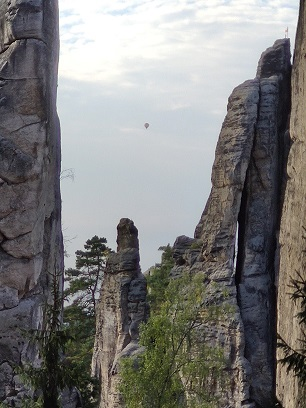
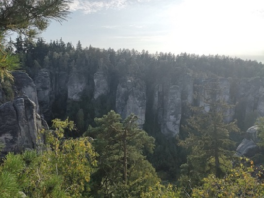

Všechny nadpisy na této stránce jsou žluté a centrované. Styl definuji v souboru style.css. a tento styl je zapsán pouze jednou a platí pro všechny nadpisy.
Nadpis výše se sám ostyloval, jelikož to bylo jednou pro všechny nadpisy definováno v souboru style.css.
| Jméno | Příjmení | Věk |
|---|---|---|
| Jakub | Škaroupka | 18 |
| Karel | Loudavý | 100 |
| Milan | Rychlý | 25 |
Prachovské skály jsou pískovcová skalní oblast, přírodní rezervace a součást Chráněné krajinné oblasti Český ráj, která se rozkládá zhruba
5 až 7 km severozápadně od Jičína.
 